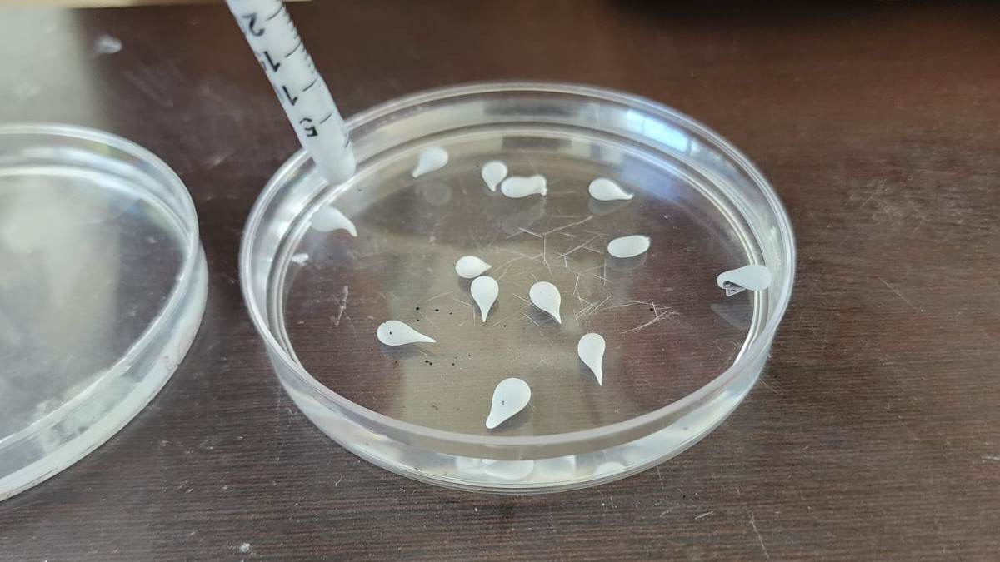
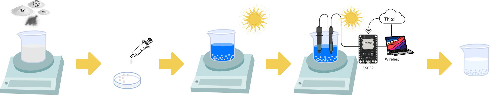
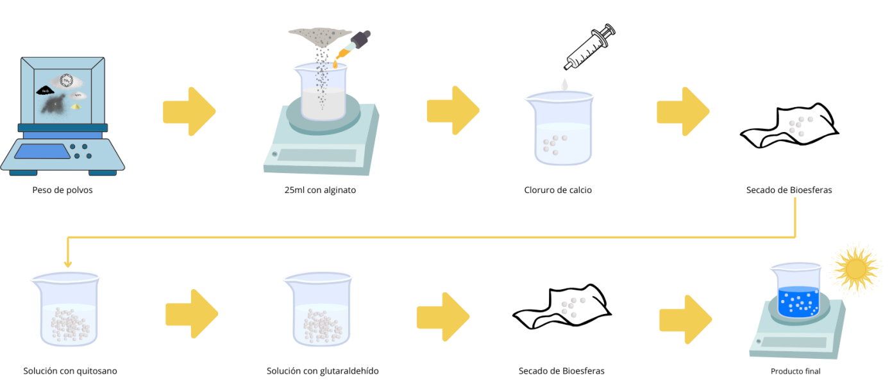
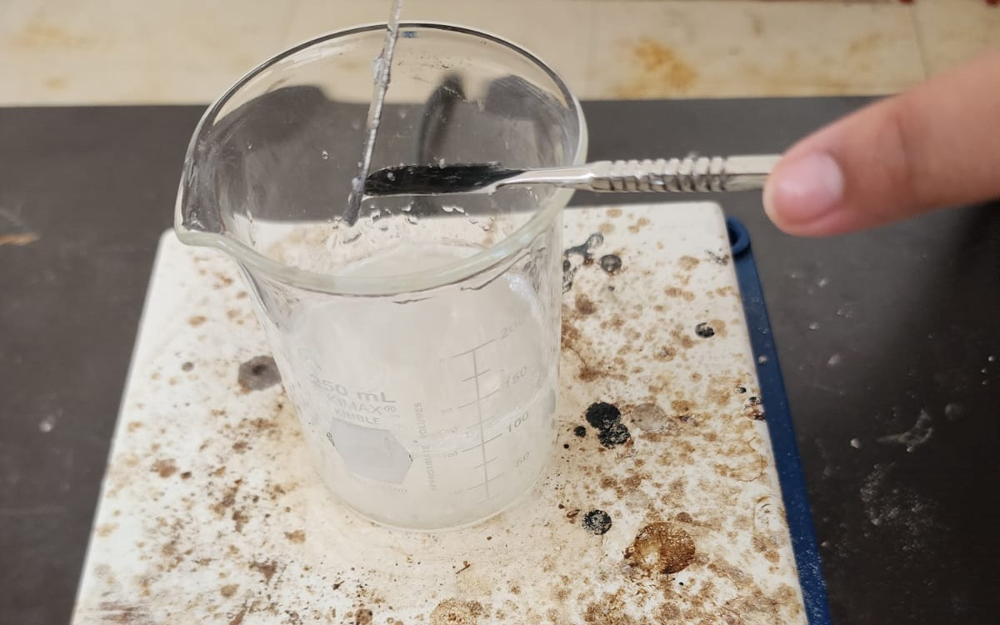
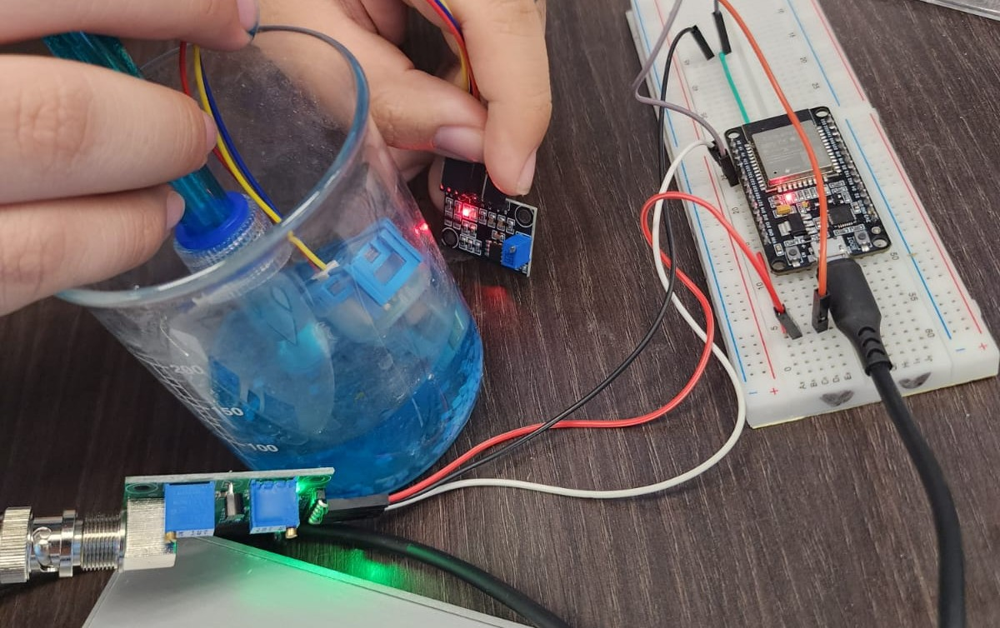
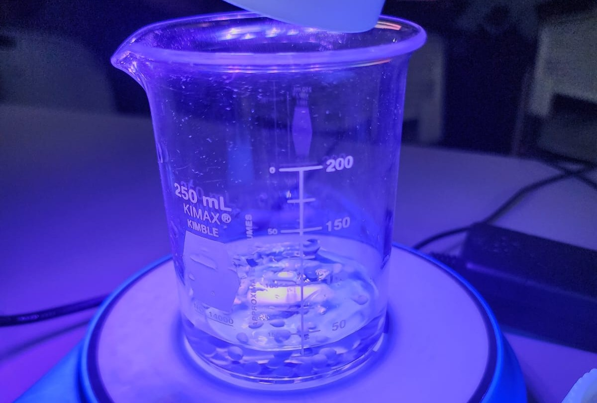
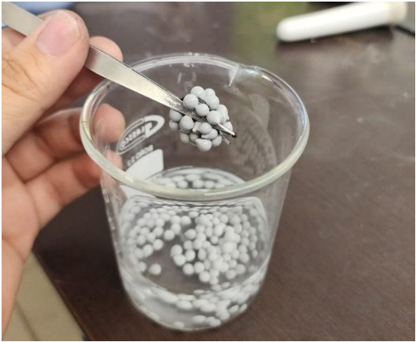
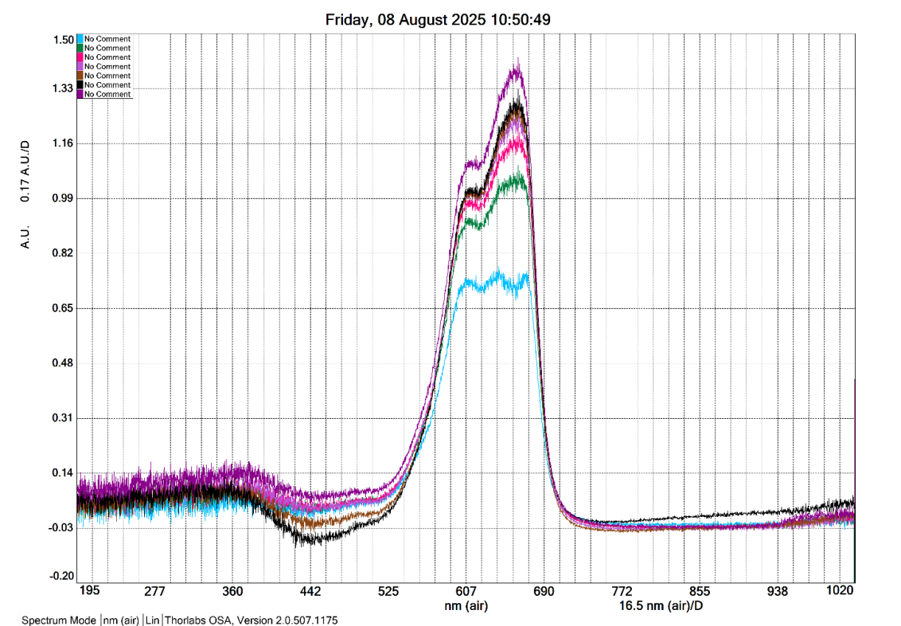
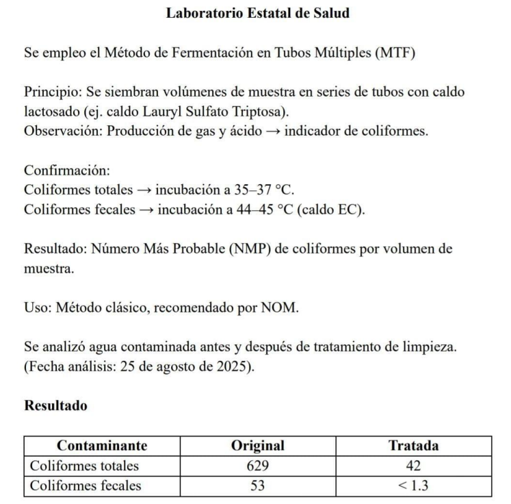

Qué Hacemos
Desarrollamos un biogel fotocatalítico a base de alginato de sodio, dióxido de titanio (TiO₂), magnetita (Fe₃O₄), plata metálica (Ag⁰), carbón activado y recubrimiento con quitosano, reforzado con glutaraldehído (0.05%). Esta formulación mejorada incrementa la estabilidad, resistencia y eficiencia del material, permitiendo su recuperación magnética y su reutilización en múltiples ciclos.
Las bioesferas aprovechan la energía de la luz solar para degradar contaminantes orgánicos y microorganismos en el agua, mientras que el carbón activado y el APG (alquil poliglucósido) favorecen la adsorción y dispersión de compuestos. El quitosano aporta propiedades antimicrobianas y la magnetita potencia la fotocatálisis al mismo tiempo que facilita la separación con un imán.
Una de sus principales ventajas es la reutilización, ya que las esferas conservan su estructura y desempeño tras varios ciclos de uso, reduciendo costos y evitando residuos secundarios. Esto convierte a nuestro sistema en una alternativa práctica frente a métodos tradicionales de purificación que suelen ser más caros y menos amigables con el medio ambiente.
El sistema también integra sensores de pH y turbidez conectados a un ESP32, que transmiten los datos en tiempo real a la nube mediante ThingSpeak. De esta forma, es posible llevar un monitoreo remoto y constante de la calidad del agua, permitiendo evaluar la eficiencia del proceso sin intervención directa.
Con esta combinación de nanotecnología, biopolímeros y monitoreo inteligente, ofrecemos una solución sustentable, accesible y de bajo impacto ambiental que contribuye al acceso a agua limpia en comunidades vulnerables y fomenta un modelo de economía circular.

Relación con los ODS
Este proyecto se alinea directamente con los Objetivos de Desarrollo Sostenible porque responde a problemas ambientales y sociales concretos:
- ODS 6 (Agua limpia y saneamiento): porque las bioesferas permiten mejorar la calidad del agua, eliminando contaminantes y microorganismos nocivos.
- ODS 9 (Industria, innovación e infraestructura): ya que se promueve la creación de un prototipo innovador, accesible y escalable que puede implementarse en comunidades.
- ODS 12 (Producción y consumo responsables): al usar materiales biodegradables y fomentar la reutilización, se reducen residuos y se aprovechan recursos de manera más eficiente.
- ODS 13 (Acción por el clima): al disminuir la necesidad de procesos industriales contaminantes para el tratamiento de agua y promover soluciones locales, se contribuye a la mitigación de impactos ambientales.
Proyecto
Justificación
La contaminación del agua por colorantes y compuestos orgánicos representa un problema ambiental y de salud pública, especialmente en comunidades con acceso limitado a tecnologías de tratamiento.
Este proyecto propone una solución rentable, reproducible y sustentable mediante un biocompuesto a base de alginato de sodio, dióxido de titanio (TiO₂), nanopartículas de plata (Ag) y carbón activado en polvo. Este sistema es biodegradable y permite eliminar contaminantes orgánicos del agua de manera eficiente, sin infraestructura costosa.
Objetivo general
Desarrollar un sistema fotocatalítico basado en biogel con sensores de pH y turbidez, y visualización web.
Objetivos específicos
- Sintetizar esferas de gel con TiO₂, Ag y carbón activado
- Programar ESP32 para monitoreo en tiempo real
- Desarrollar página web con gráficas y contenido informativo
- Evaluar eficiencia en diferentes tipos de agua
- Analizar la reutilización de las esferas
- Relacionar el proyecto con los Objetivos de Desarrollo Sostenible
Conclusión
El desarrollo del biogel fotocatalítico con monitoreo remoto representa un avance significativo en el tratamiento de aguas contaminadas, especialmente aquellas con colorantes orgánicos como el azul de metileno.
Los resultados experimentales demostraron que el sistema es eficaz, sostenible y adaptable a contextos reales con recursos limitados. Se logró reducir la turbidez y la coloración del agua sin alterar significativamente su pH, utilizando únicamente luz solar como fuente de activación.
Justificación
La necesidad de soluciones sostenibles para el tratamiento de agua se mantiene vigente, especialmente en comunidades con recursos limitados donde el acceso a agua potable es un desafío constante. Este proyecto no solo recupera la idea de generar bioesferas biodegradables, sino que integra nuevos componentes como magnetita (Fe₃O₄), quitosano, APG y glutaraldehído. Estos materiales refuerzan la estabilidad de las esferas, prolongan su vida útil y, además, permiten su recuperación magnética y reutilización en múltiples ciclos.
La incorporación de biopolímeros como el quitosano aporta propiedades antimicrobianas y estabilidad mecánica, mientras que la magnetita no solo mejora la fotocatálisis, sino que facilita la separación del material del agua una vez concluido el proceso. En conjunto, estos elementos permiten desarrollar una alternativa práctica, económica y ambientalmente responsable para la remoción de contaminantes en agua, atendiendo problemas reales de salud y sostenibilidad.
Objetivo general
Sintetizar bioesferas fotocatalíticas con TiO₂, Fe₃O₄, AgNPs, carbón activado y recubrimiento polimérico, con capacidad de recuperación magnética y alta eficiencia de degradación de contaminantes orgánicos y microbiológicos.
Objetivos específicos
- Optimizar la formulación de las bioesferas con nuevos compuestos
- Evaluar la eficiencia fotocatalítica en distintos tipos de agua
- Comprobar la recuperación magnética
- Analizar la estabilidad estructural y reutilización en múltiples ciclos
- Validar la seguridad ambiental y biodegradabilidad
Conclusión
Aunque se añadieron nuevos elementos, el proyecto mantiene su enfoque sustentable y accesible. El refuerzo con magnetita y biopolímeros amplía la vida útil de las bioesferas y su eficiencia en la eliminación de contaminantes. Además, al ser recuperables y reutilizables, se promueve un modelo de economía circular y de bajo impacto ambiental.
Procedimiento
Preparación del biogel
Se disuelven 2g de alginato en 25mL de agua destilada, se agregan 0.1g de TiO₂, 0.005g de Ag y 0.05g de carbón activado. Se gotea la mezcla sobre solución de CaCl₂ para formar esferas.
Montaje del monitoreo
El ESP32 se conecta a sensores de pH y turbidez y se programa con Arduino IDE para enviar datos a ThingSpeak.
Desarrollo web
Se diseñó una web interactiva que muestra las gráficas de datos del sensor en tiempo real y explica el proceso. Estas en ella !
Ejecución
Las esferas se colocaron en agua contaminada con azul de metileno al 0.02%, bajo luz solar o UV. Se monitorearon pH, turbidez y color.
Pruebas experimentales
- Prueba 1 – Azul de metileno: Tratamiento durante 3 horas bajo luz UV. Se redujo notablemente la coloración azul.
- Prueba 2 – Colorante rosa: Tratamiento durante 1 hora y 30 minutos. Se observó rápida degradación del color.
- Prueba 3 – Agua con tierra: Tratamiento de 2 horas. Se redujo la turbidez, validando la adsorción de partículas.
Nueva formulación
Como resultado de la etapa de optimización realizada en agosto de 2025, se incorporaron nuevos componentes que fortalecen la matriz polimérica y amplían la eficiencia del sistema fotocatalítico. Estas mejoras buscan resolver problemas observados en versiones anteriores, como pérdida de firmeza o dificultad en la recuperación de las esferas.
- Magnetita (Fe₃O₄): permite la recuperación magnética de las bioesferas y actúa como co-catalizador redox, potenciando la generación de radicales oxidantes.
- Microencapsulado de peróxido de carbamida: prolonga la liberación de especies oxidantes, asegurando una acción más duradera durante el tratamiento del agua.
- Alquil poliglucósido (APG): tensioactivo no iónico y biodegradable que mejora la dispersión de los componentes activos en la matriz.
- Quitosano: incrementa la estabilidad estructural y otorga propiedades antimicrobianas adicionales gracias a su interacción con membranas celulares.
- Glutaraldehído (0.05%): actúa como agente reticulante suave, reforzando la matriz sin comprometer la biodegradabilidad del sistema.
Conclusión
Gracias a estas mejoras, las bioesferas presentan una mayor resistencia mecánica, una eficiencia fotocatalítica superior y la posibilidad de ser reutilizadas en múltiples ciclos sin pérdida significativa de rendimiento. Además, se conserva su carácter biodegradable y sustentable, alineado con los principios de innovación responsable.
Relación con el procedimiento
Esta nueva formulación se integra en la sección de Procedimiento como la versión más actualizada del método de síntesis. A diferencia de los ensayos iniciales, ahora las bioesferas no solo incorporan TiO₂, AgNPs y carbón activado, sino también estos aditivos que refuerzan su estabilidad y amplían su funcionalidad. De esta manera, el procedimiento evoluciona para ofrecer un prototipo más completo, eficiente y con mayor aplicabilidad práctica.
Monitoreo
Gracias al monitoreo remoto con ESP32 y ThingSpeak, los datos se reflejan en tiempo real en esta página, permitiendo evaluar el proceso sin intervención directa.
Gráficas
Gráfica de Turbidez
Gráfica de pH
Pruebas de limpieza
Durante las pruebas en agua contaminada con tierra, jabón y colorantes como azul de metileno, las bioesferas fotocatalíticas lograron una reducción visible de la turbidez en pocas horas. Después de 15 horas de tratamiento, el agua presentó una notable claridad y ausencia de residuos sólidos, confirmando la eficiencia del sistema.
Pruebas de absorbancia
Los análisis espectrofotométricos mostraron una disminución de más del 87% en los picos de absorbancia asociados a compuestos orgánicos y colorantes. Esto indica que las bioesferas no solo clarifican el agua, sino que también degradan químicamente los contaminantes presentes mediante fotocatálisis. 
Prueba microbiológica
El análisis microbiológico evidenció una reducción del 93.3% de coliformes totales y del 97.5% de coliformes fecales tras el tratamiento con bioesferas. Estos resultados confirman la capacidad del prototipo no solo para eliminar contaminantes químicos, sino también para mejorar la calidad sanitaria del agua. 